The Windows
The Main Window
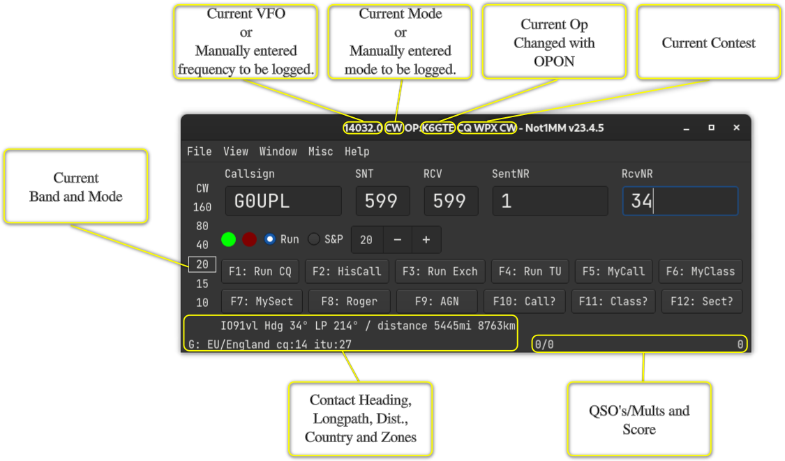
Keyboard Commands
| Key | Result |
|---|---|
Esc |
Stop the cwdaemon from sending Morse characters. |
PgUp |
Increase the CW sending speed. |
PgDown |
Decrease the CW sending speed. |
Arrow-Up |
Jump to the next spot above the current VFO cursor in the bandmap window (CAT Required). |
Arrow-Down |
Jump to the next spot below the current VFO cursor in the bandmap window (CAT Required). |
TAB |
Move cursor to the right one field. |
Shift-Tab |
Move cursor left One field. |
SPACE |
When in the callsign field, move the input to the next field in the exchange. |
Enter |
Submit entered data to the log, unless ESM is enabled. |
F1-F12 |
Send (CW/RTTY/Voice) macros. |
CTRL-S |
Spot Callsign to the cluster. |
CTRL-M |
Highlight Callsign in the bandmap window. |
CTRL-G |
Tune to a spot matching partial text in the callsign entry field (CAT Required). |
CTRL-SHIFT-K |
Open CW text input field. |
CTRL-= |
Log the contact without sending the ESM macros. |
CTRL-W |
Clear the input fields of any text. |
ALT-B |
Toggle the bandmap window. |
ALT-C |
Toggle the Check Partial window. |
ALT-L |
Toggle the QSO Log window. |
ALT-R |
Toggle the Rate window. |
ALT-S |
Toggle the Statistics window. |
ALT-V |
Toggle the VFO window. |
The Log Window
Window >> Log Window
The Log Window gets updated automatically when a contact is entered. The top half is a chronological list of all contacts.
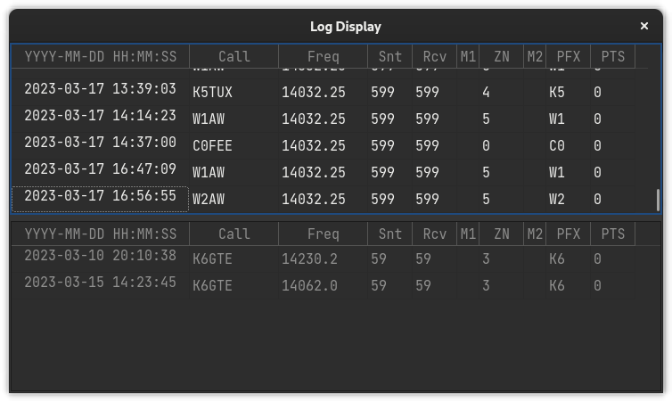
The bottom half of the Log Window displays logged contacts sorted by complete or partial matches to characters in the call entry field. The columns displayed in the log window depend on the current active contest.
Editing a Contact
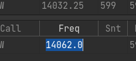
Double-click a cell in the log window to edit its contents. Right-clicking on a cell brings up the edit dialog.
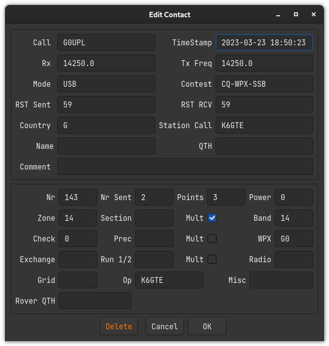
You cannot directly edit the multiplier status of a contact. See the next section on recalculating multipliers. When editing a logged callsign, it’s a good idea to check if other data such as the WPX field are still valid.
The Bandmap Window
Window >> Bandmap‘
The bandmap displays spots drawn from the Cluster node specified in the Configuration Settings. Enter your callsign and press the Connect button. When CAT is enabled, the bandmap will track with the VFO. This is still a work in progress.
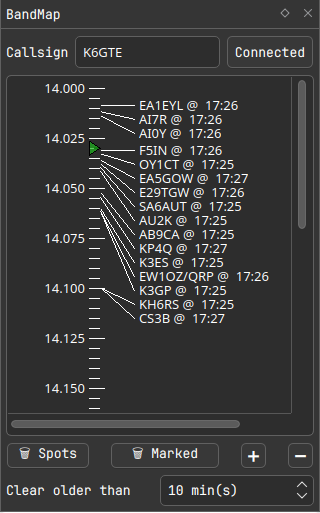
The VFO frequency is indicated with a small green triangle above the tick marks. A vertical blue bar displays the receive filter bandwidth if available via CAT.
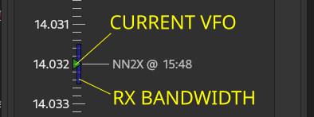
Clicking on a spot sets the VFO and populates the callsign field.
Previously worked callsigns are displayed in red. Callsigns marked with
CTRL-M are highlighted in yellow. A small icon after the callsign
indicates the mode as follows:
Primary Modes:
-
\(\bigcirc\) CW
-
\(\bigodot\) FT*
-
\(\circledcirc\) RTTY
-
\(\bigwedge\) Beacon
-
@ Everything else
Secondary Modes:
-
POTA
-
SOTA
The icon is followed by the UTC time of the spot. The screenshot below shows CW and FT8 spots on the 20m band.
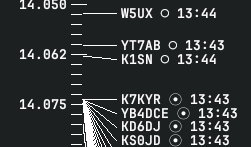
The Check Partial Window
Window >> Check Partial Window
As a callsign is entered, the Check Window displays potential matches from the MASTER.SCP file, the local log, and recent telnet cluster spots. The MASTER.SCP column shows candidates with 3 or more matching characters indexed from the start of the callsign string. The local log and telnet columns match character strings of any length. Clicking on any of these candidate callsigns will automatically populate the callsign field.
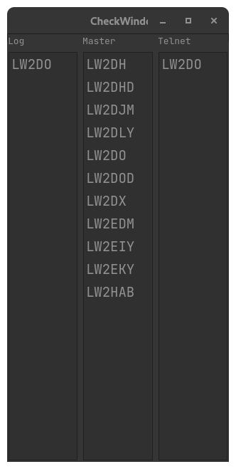
The DXCC window
Window >> DXCC
This window displays a table of worked DXCC entities arranged by band. When optional automatic scrolling is enabled, entering a callsign will scroll to the corresponding DXCC entity prefix.
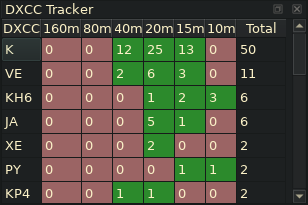
The Zone window
Window >> Zone
This window functions the same way as the DXCC window, but for CQ or ITU zones. When automatic scrolling is enabled, check the appropriate radio button to select CQ or ITU zones as determined by the DX contest requirements.
The Rotator Window (Work In Progress)
Window >> Rotator
The Rotator window is a work in progress. The Rotator window relies on the functionality of the rotctld daemon. It connects to rotctld on address 127.0.0.1 and port 4533. You can change this if needed in the configuration dialog under the rotator tab. If started and there is no connection, you will see this:
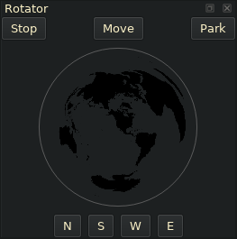
Once there is a connection to rotctld, the current azimuth of the antenna is obtained and you will see a direction needle apear:
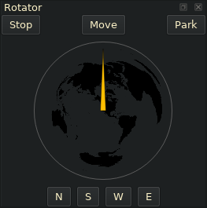
Once a call is entered and the bearing to contact is calculated you will see a needle appear:
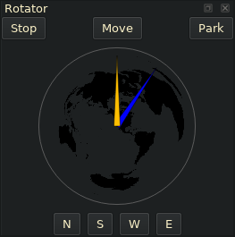
At this time you can click on the ’Move’ button to point your antenna at the contact. A list of other buttons follows below.
Move: Rotates the antenna at the target.
Stop: Stops the current movement.
Park: Parks the antenna.
N,S,W,E: Points the antenna to one of the 4 cardinal directions.
You can also move the rotator by clicking in the globe where you want the antenna to point.
The Remote VFO Window
When operating a remote station, the transceiver VFO can be controlled using inexpensive hardware in tandem with the Remote VFO window. A description of the hardware can be found at the following link:
https://github.com/mbridak/not1mm/blob/master/usb\_vfo\_knob/vfo.md
Communicate with it using the VFO Window: Window >> VFO
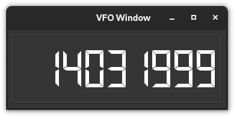